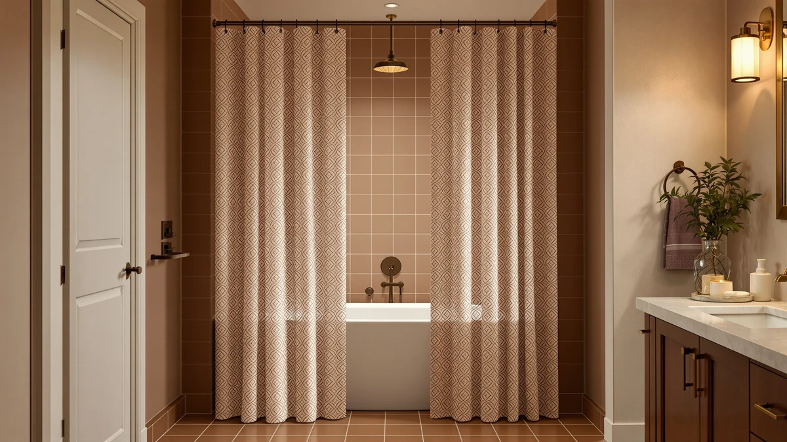

The Best Patterned Shower Curtains (2026)
Prices and picks verified as of August 2026. Independent, reader-supported reviews.


Quick Answer
We compared seven of the best patterned shower curtains on Amazon for material, size, price, and verified owner reviews. The Madison Park Shower Curtain Waffle wins for most bathrooms: a textured waffle weave, a water-resistant polyester and PEVA blend, and a standard 72 by 72 inch fit at $20.49.
Our pick: Madison Park Shower Curtain Waffle, $20.49 Check Price on Amazon
Bottom line: our top pick is the Madison Park Shower Curtain Waffle Weave Striped Pieced at $20.49. The best budget option is the Titanker Waterproof Fabric Shower Curtain Liner Washable at $7.99.
Things to Know Before You Buy
- "Patterned" covers both prints and woven texture. Some of the best patterned shower curtains in this guide, like the Madison Park Waffle and the No Hooks Textured Shower, get their pattern from a woven texture rather than a printed graphic. If you want a bold visual print, the Madison Park Amherst and XOGUIBO Farmhouse picks lean closer to that look.
- Standard size is 72 by 72 inches. Five of the seven picks here use that footprint. The Titanker measures 70 by 72 inches and the No Hooks Polyester Textured Shower measures 71 by 74 inches, so measure your rod before ordering either.
- Most fabrics resist splashing on their own. Six of the seven curtains use a polyester or PEVA blend built to handle daily water contact, so many owners hang them without a separate liner in a stall shower. A tub setup with more splash still benefits from a liner behind any of them.
- Microfiber costs more than polyester and PEVA blends. The Madison Park Amherst, the only microfiber pick in this lineup, runs $32.19, roughly triple the price of the cheapest polyester option here.
- Review history varies widely by product. The Titanker has 8,902 reviews behind its 4.6-star average, while several other picks here are newer listings without a public review count yet. A large review base makes a rating easier to trust.
The best patterned shower curtains do more work in a bathroom than almost any other single item you can buy for under $35. A plain white liner gets water off the floor, but it does nothing for a room with beige tile and a builder-grade vanity. A textured or printed curtain covers the largest visual surface in the room, and it costs a fraction of retiling or repainting.
We compared seven patterned shower curtains across material, size, price, rating, and review count, pulling specs and owner feedback from the current Amazon listings rather than promotional copy. The lineup splits into two groups: five polyester and PEVA-blend curtains built for daily water contact, and one microfiber print for buyers who want a softer feel. Prices run from $7.99 to $32.99, and the two picks with a public review history both clear a 4.6-star average.
The Madison Park Shower Curtain Waffle leads the group for most bathrooms, pairing a textured weave with a water-resistant blend and a standard 72 by 72 inch fit at $20.49. If you want a bolder print, a lower price, or a proven review history, we cover those alternatives below along with the honest drawbacks of each.
Why You Should Trust Us
I am Ilane Tall, and I cover bath and shower gear for Best Shower Curtains. For this guide to the best patterned shower curtains, I focused on the details that decide whether a curtain earns its keep in a real bathroom: whether the fabric handles water without a liner, how the price compares across similar styles, and what verified buyers say once the pattern has been through a few wash cycles.
We do not own or install every curtain we cover. Instead, we research each listing closely, cross-check material and size claims against the manufacturer's own description, and weigh customer ratings against review volume, since a strong average built on a handful of reviews tells you far less than the same average built on thousands. Every price, material, and rating in this guide comes from the current Amazon listing, and we flag it clearly when a pick does not yet have a public review history.
How We Picked
We started with a wide list of candidates for the best patterned shower curtains in woven-texture and printed styles, then narrowed the field by material, price spread, and available rating data. We excluded curtains with a rating under 4.0 stars and anything priced well outside the range most shoppers expect to pay for this category.
We also wanted a real range of patterns and fabrics rather than seven near-identical polyester panels. That is why this guide includes a subtle waffle-weave texture, a bold farmhouse print, a solid navy option that pairs well with patterned towels, and a microfiber upgrade pick, alongside three additional polyester and PEVA-blend curtains that differ mainly in tone and price. We weighed each listing's material claim against its price, since a curtain marketed as premium at a budget price is worth a closer look before it earns a spot here.
How We Compared
We compared each of the best patterned shower curtains in this guide on the same set of facts: listed material, panel size, current price, and star rating and review count where a listing has them, all pulled directly from the live Amazon listing rather than marketing copy. Where a listing described a fabric as waterproof or splash-resistant, we checked the underlying material, since polyester and PEVA hold up differently than microfiber over time.
We also weighed review count against rating, because a strong average built on thousands of verified buyers, like the Titanker's 8,902 reviews, carries more weight than a similar average with no public review history yet. Reviewers consistently note whether a pattern holds its color after washing, whether the curtain needs a separate liner, and how the fabric feels against skin, and we folded that owner feedback into the pros and cons below alongside the raw specs.
Our Picks
Here are the best patterned shower curtains from our comparison, ranked from the top overall pick through the strongest alternatives for a bolder print, a smaller budget, or a proven review history.

Madison Park Shower Curtain Waffle
What we like
- Waffle-weave texture adds visual pattern without a loud print
- Polyester and PEVA blend resists splashing better than plain fabric
- Recognized Madison Park brand at a mid-range $20.49 price
Flaws but not dealbreakers
- Texture-based pattern reads subtler than a printed design
- No public review count yet to weigh against the rating claims
| Material | Polyester / PEVA |
| Size | 72"W x 72"L (Pack of 1) |
The Madison Park Shower Curtain Waffle earns the top spot in this guide by pairing a distinct woven pattern with a fabric blend built to handle a wet bathroom. At $20.49, it sits in the middle of the price range covered here, and the waffle weave gives it dimension that a flat printed curtain cannot match under bathroom lighting.
The polyester and PEVA blend means it resists splashing well enough that many owners skip a separate liner in a stall shower, and the 72 by 72 inch size fits a standard rod without alteration. The tradeoff is a quieter pattern than the bolder prints elsewhere in this lineup, so it suits a bathroom that wants texture as the visual interest rather than a graphic print. Madison Park's name recognition also gives it an edge over lesser-known brands at a similar price point.

BTTN Navy Blue Fabric Shower
What we like
- Lowest fabric-curtain price in this guide at $9.99
- Navy tone pairs easily with patterned towels or a printed bath mat
- Polyester and PEVA blend handles daily water contact
Flaws but not dealbreakers
- Solid color rather than an actual printed or textured pattern
- No public review count yet to confirm long-term durability
| Material | Polyester / PEVA |
| Size | 72"W x 72"L (Pack of 1) |
The BTTN Navy Blue Fabric Shower undercuts the rest of this lineup on price at $9.99, the least expensive curtain covered here. Rather than a printed or textured pattern, it delivers a deep, saturated navy that reads as a deliberate design choice on its own, and it works as a neutral backdrop if you would rather bring the pattern in through towels or a bath mat.
The polyester and PEVA blend matches the water resistance of the pricier picks in this guide, so you are not sacrificing function for the lower price. If a printed or woven pattern is the whole point of your search, this is the one curtain here that leans on color instead, and the Madison Park Amherst or XOGUIBO Farmhouse picks below deliver a more graphic look for a higher price.

Madison Park Amherst Bathroom Shower
What we like
- Only microfiber pick in this guide, softer than polyester and PEVA blends
- Amherst print reads more graphic than the texture-based patterns here
- Same 72 by 72 inch standard size as most of the lineup
Flaws but not dealbreakers
- Highest price in this guide at $32.19
- No public review count yet to weigh against the price premium
| Material | Microfiber |
| Size | 72"W x 72"L (Pack of 1) |
The Madison Park Amherst Bathroom Shower is the only microfiber curtain in this guide, and that fabric switch is what pushes the price to $32.19, the highest in the lineup. Microfiber tends to feel softer against skin than a polyester and PEVA blend, and the Amherst print carries a more graphic, deliberate pattern than the texture-based waffle weave of our top pick.
At this price, you are paying for both the fabric upgrade and the bolder print, not the brand name alone. It still measures a standard 72 by 72 inches, so it fits the same rods as the rest of this lineup without adjustment. Choose it when the print itself matters more to you than matching the lowest price on this list, and expect to pay roughly triple the BTTN's cost for that tradeoff.

XOGUIBO Farmhouse Shower Curtain with
What we like
- Farmhouse print stands apart from the plainer picks in this guide
- Polyester and PEVA blend resists splashing in daily use
- Standard 72 by 72 inch size fits a typical rod
Flaws but not dealbreakers
- Priced above several picks here despite not being the softest fabric
- Rustic print will not suit a modern or minimalist bathroom
| Material | Polyester / PEVA |
| Size | 72"W x 72"L |
The XOGUIBO Farmhouse Shower Curtain brings a rustic, plaid-adjacent print to a category that otherwise leans toward solid tones and subtle textures. At $28.99, it costs more than most of the polyester and PEVA blends in this guide, but the pattern is the most distinct farmhouse-style option in the lineup.
The fabric handles daily splashing the same way as our top pick, and the 72 by 72 inch size fits without alteration. It suits a bathroom already built around farmhouse decor, like a wood-frame mirror or a woven hamper, more than a modern space where the print would clash. If the price gives you pause, the Madison Park Waffle delivers similar water resistance for less at a quieter pattern.

Titanker Waterproof Fabric Shower Curtain
What we like
- Lowest price in this entire guide at $7.99
- 8,902 reviews, the largest sample of any pick here
- 4.6-star average holds steady at real scale, not a small sample
Flaws but not dealbreakers
- 70 by 72 inch size is slightly narrower than the standard 72 by 72
- Fabric-feel pattern is subtler than the bolder printed picks here
| Material | Polyester / PEVA |
| Size | 70x72 |
The Titanker Waterproof Fabric Shower Curtain combines the lowest price in this guide with by far the largest review base. At $7.99, it costs less than any other pick here, and its 8,902 reviews give the 4.6-star average a level of confidence none of the other curtains in this lineup can match.
The fabric-feel weave adds a subtle pattern without a graphic print, and buyers repeatedly mention that it resists splashing well for the price. The one spec to double-check is size: at 70 by 72 inches, it runs two inches narrower than the standard 72 by 72 inch curtains in this guide, which matters if your rod sits at the wider end of typical. For most stall showers and tubs, that difference is negligible.

White Boho Fabric Shower Curtain
What we like
- 4.7-star average, tied for the highest rating in this guide
- 2,545 reviews back the rating with a solid sample size
- Mid-range $19.78 price for a polyester and PEVA blend
Flaws but not dealbreakers
- Lighter, more subtle pattern than the bolder farmhouse or Amherst prints
- White base shows less contrast against light-colored tile
| Material | Polyester / PEVA |
| Size | 72x72 |
The White Boho Fabric Shower Curtain ties for the highest rating in this guide at 4.7 stars, and its 2,545 reviews give that average real weight. At $19.78, it lands close to our top pick on price while offering a lighter, more textural pattern in a bright white base.
Owners report the fabric holds its texture well through regular washing, and the neutral white tone works as an easy match for existing towels or a patterned bath mat. If you want a pattern that reads as decor rather than a statement print, this is one of the stronger options here, and the review count backs up the rating better than most of the newer listings in this lineup.

No Hooks Polyester Textured Shower
What we like
- Hookless design skips separate shower curtain rings entirely
- 4.7-star average across 2,180 reviews, tied for the top rating
- Slightly larger 71 by 74 inch size covers more of a tall shower
Flaws but not dealbreakers
- Highest price in this guide at $32.99
- Hookless build only fits rods designed for that style
| Material | Polyester / PEVA |
| Size | 71x74 |
The No Hooks Polyester Textured Shower ties the White Boho curtain for the highest rating in this guide at 4.7 stars, backed by 2,180 reviews. Its hookless build threads directly onto a compatible rod, which cuts out separate shower curtain rings and the pattern-breaking gaps they can leave between panel and rod.
At 71 by 74 inches, it runs slightly larger than the standard 72 by 72 inch curtains here, giving a bit more drop coverage for a taller shower. That extra size and the hookless convenience come at the highest price in this lineup, $32.99, so it suits a buyer who values the no-hooks setup more than getting the lowest possible price.
Quick Comparison
The table below lines up all seven of the best patterned shower curtains from this guide by material, price, rating, and best use case.
| Product | Material | Price | Rating | Best for | Get it |
|---|---|---|---|---|---|
| Madison Park Shower Curtain Waffle | Polyester / PEVA | $20.49 | 4 | Subtle woven pattern | View on Amazon → |
| BTTN Navy Blue Fabric Shower | Polyester / PEVA | $9.99 | 4 | Tight budgets | View on Amazon → |
| Madison Park Amherst Bathroom Shower | Microfiber | $32.19 | 4 | Bolder printed pattern | View on Amazon → |
| XOGUIBO Farmhouse Shower Curtain with | Polyester / PEVA | $28.99 | 4 | Farmhouse-style bathrooms | View on Amazon → |
| Titanker Waterproof Fabric Shower Curtain | Polyester / PEVA | $7.99 | 4.6 | Proven reviews on a budget | View on Amazon → |
| White Boho Fabric Shower Curtain | Polyester / PEVA | $19.78 | 4.7 | Subtle, textured pattern | View on Amazon → |
| No Hooks Polyester Textured Shower | Polyester / PEVA | $32.99 | 4.7 | Hookless setups | View on Amazon → |
The Competition
A couple of these picks land lower in this guide for specific, addressable reasons rather than a broad flaw. The Madison Park Amherst Bathroom Shower carries the boldest print and the softest microfiber fabric, but at $32.19 it costs more than any polyester or PEVA-blend pick here without a public review count to back up that premium. The BTTN Navy Blue Fabric Shower is the cheapest curtain in the guide, but it leans on solid color rather than an actual printed or textured pattern, so it only earns a spot if you plan to bring the pattern in elsewhere.
We also passed over plain vinyl shower curtains and printed liners entirely, since a thin liner print tends to fade and crack faster than a dedicated fabric curtain, even at a similar price. We excluded any listing with a rating under 4.0 stars once review data was available. After weighing pattern, material, and price across all seven, the best patterned shower curtains for most bathrooms still center on the Madison Park Shower Curtain Waffle, with the Titanker as the strongest budget alternative.
Frequently Asked Questions
Do patterned shower curtains need a liner?
It depends on the fabric. All seven picks in this guide use a polyester, PEVA, or microfiber blend that resists splashing, so many owners hang them alone in a stall shower. A tub setup with a lot of splash still benefits from a separate PEVA liner behind any fabric curtain, patterned or not.
What size shower curtain do most patterned styles come in?
Six of the seven curtains in this guide measure 72 by 72 inches, the standard size for a single-width rod over a tub or stall. The Titanker measures 70 by 72 inches and the No Hooks Polyester Textured Shower measures 71 by 74 inches, so check your rod width before ordering either one.
How do you keep a patterned shower curtain from fading?
Wash on a cold, gentle cycle and skip the dryer's high heat setting, since heat is what breaks down printed dye faster than daily water exposure. Owners of polyester and PEVA-blend patterns say the color holds up longer than lighter fabric weaves when washed this way.